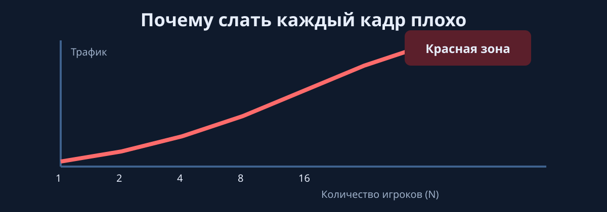
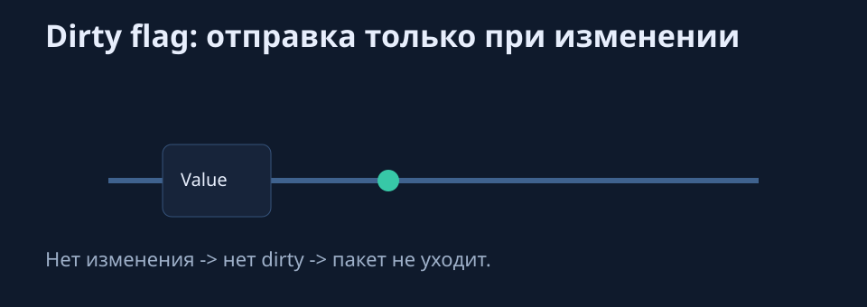
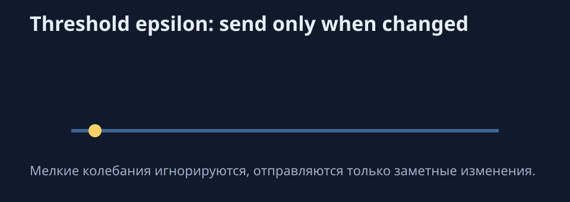
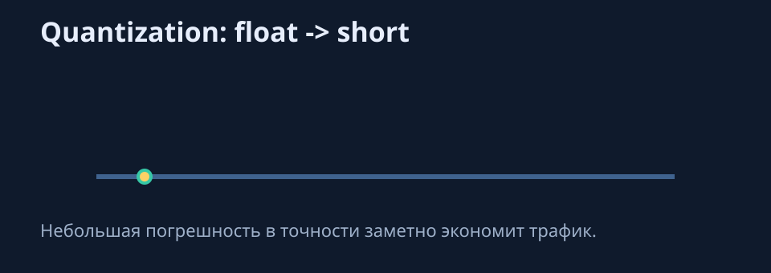
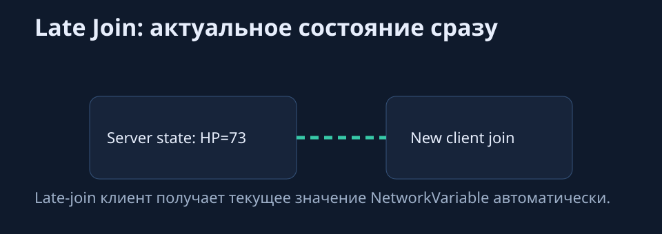
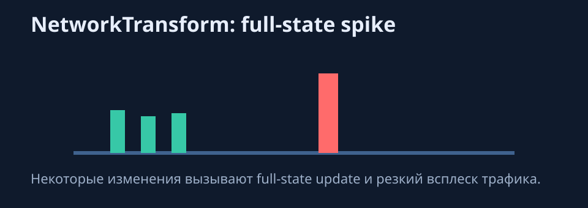
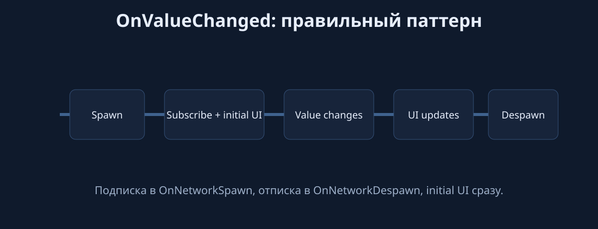
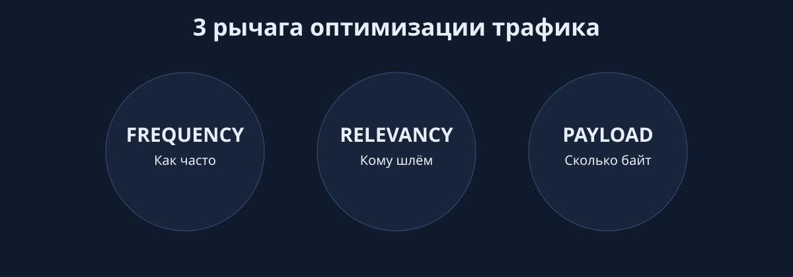
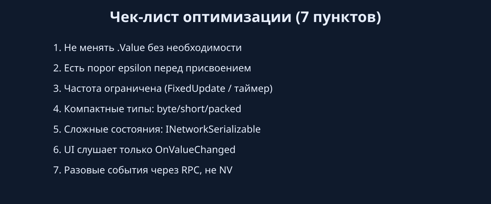

State отвечает на вопрос "как сейчас", Events - "что произошло".
State Sync - синхронизация актуального состояния объектов между клиентами.
Позиция игрока.
HP / счёт.
Состояние двери или объекта.
В NGO для этого используется NetworkVariable.
Пояснение
State Sync нужен для данных, которые должны быть одинаковыми у всех игроков в каждый момент времени. Это "снимок текущего состояния", а не история событий.
Почему это важно
Если перепутать state и события, игроки будут видеть разные миры: у одного дверь открыта, у другого закрыта.
Почему нельзя слать каждый кадр

Рост числа клиентов быстро выводит трафик в красную зону.
Сеть работает на другой частоте, чем рендер.
Каждый лишний апдейт увеличивает трафик и вероятность потерь.
Нужны пороги, ограничение частоты и выбор получателей.
Практический смысл
"Больше апдейтов" не равно "лучше". После определённой точки вы только увеличиваете перегрузку сети и вероятность потерь.
Типичная ошибка
Отправлять одинаковые данные в каждом Update без порога изменения и ограничения частоты.
Симуляции оптимизаций
Короткие анимации показывают, где именно экономится трафик.

Dirty/Send
Если значение не изменилось, обновление по сети не уходит.

Threshold epsilon
Мелкие изменения игнорируются без визуального ущерба.

Quantization
Снижаем точность, но резко уменьшаем payload.

Late Join
Новый клиент сразу получает текущее значение NV.

Full-state spike
Некоторые изменения дают резкий скачок трафика.
Как использовать этот блок
Сначала смотрите визуальный эффект, затем проверяйте свой код: где выставляется dirty, где стоит порог epsilon и как часто реально меняется состояние.
NetworkVariable: идея и жизненный цикл

Подписка и отписка в правильных методах жизненного цикла.
Source of Truth обычно на сервере.
Late-join клиент автоматически получает текущее значение.
Подписка на OnValueChanged должна быть в OnNetworkSpawn.
Read: Everyone, если состояние нужно UI и другим клиентам.
new NetworkVariable<int>(
0,
NetworkVariableReadPermission.Everyone,
NetworkVariableWritePermission.Server
);
Пояснение
Права записи определяют, кто формирует истину. Для соревновательной логики почти всегда нужен server-authoritative режим.
Типичная ошибка
Дать Write всем клиентам и потом пытаться "чинить" читерство постфактум.
Когда реально уходит по сети: Dirty/Send
Сеть отправляет данные только если значение изменилось и переменная помечена как dirty на network tick.
Не трогайте .Value без необходимости.
Меняйте значение реже (таймер или FixedUpdate).
Не присваивайте одно и то же каждый кадр.
Пояснение
Передача происходит не при каждом чтении/присваивании, а в сетевой тик и только для dirty-значений. Это ключ к пониманию оптимизации трафика.
Сериализация: объект -> байты -> объект
Сериализация упаковывает данные для сети, десериализация распаковывает на стороне получателя.
Порядок write/read должен совпадать.
Ошибки формата дают смещение буфера и повреждённые данные.
FastBufferWriter/Reader даёт быстрый низкоуровневый контроль.
// server
Write(A); Write(B); Write(C);
// client
Read(A); Read(B); // C пропущен -> формат сломан
Практический вывод
Формат сообщений нужно проектировать как контракт: любое несовпадение порядка или типа ломает декодирование у клиента.
INetworkSerializable и кастомные типы
Используйте для структур состояния игрока, предметов, инвентаря, которые часто ходят по сети.
public struct PlayerState : INetworkSerializable {
public Vector3 Position;
public Quaternion Rotation;
public byte Stance;
public void NetworkSerialize<T>(BufferSerializer<T> s)
where T : IReaderWriter {
s.SerializeValue(ref Position);
s.SerializeValue(ref Rotation);
s.SerializeValue(ref Stance);
}
}
Порядок полей обязателен и должен быть одинаковым у всех участников сети.
Пояснение
Кастомная сериализация даёт контроль над размером и структурой пакета. Это особенно важно для часто обновляемых структур состояния.
3 рычага оптимизации

Оптимизация начинается с частоты, затем релевантности и payload.
Frequency: как часто отправляем (пороги, таймеры).
Relevancy: кому отправляем (AOI, только видящим клиентам).
Payload: сколько байт (packed, квантизация, custom serialization).
Как применять по шагам
Сначала настраивайте частоту (самый быстрый эффект), затем режьте получателей (relevancy), и только после этого полируйте payload.
Payload: квантизация и packed int
Позиция: float32 (4 байта) -> short (2 байта), экономия до 50%.
Yaw: float -> ushort, экономия до 50%.
3D позиция: 12 байт -> 6 байт.
Packed int (varint): для маленьких значений 1-3 байта вместо 4.
На большом числе объектов маленькая экономия превращается в заметный выигрыш.
Типичная ошибка
Квантизировать без измерений. Сначала проверьте baseline-трафик, затем сравните до/после и зафиксируйте допустимую погрешность.
NetworkTransform и трафик
Некоторые настройки (Unreliable Deltas, Quaternion Compression, Half Float) сильно влияют на объём отправки.
Важно помнить: часть изменений может триггерить full-state update.
Пояснение
NetworkTransform удобен на старте, но при масштабе может стать узким местом. Важно осознанно выбирать, что синхронизировать автоматически, а что вручную.
Практика: HP через NetworkVariable (server-authoritative)
Если объект должен "помнить" значение для новых клиентов — это state. Если важно только одноразовое действие здесь и сейчас — это событие.
Чек-лист оптимизации

Сделайте первые 3 пункта - это уже большой прирост стабильности.
Как применять чек-лист
Прогоняйте список после каждой крупной фичи. Это предотвращает незаметное накопление трафика по мере роста проекта.
Практическая связка с лекцией 2
После лекции 2 студент уже понимает, как работают NetworkVariable, права чтения и записи, подписка на OnValueChanged и server-authoritative обновление состояния.
Следующий шаг на практике: собрать рабочую сцену с подключением Host/Client, вывести Nickname и HP в UI и реализовать нанесение урона через сервер.